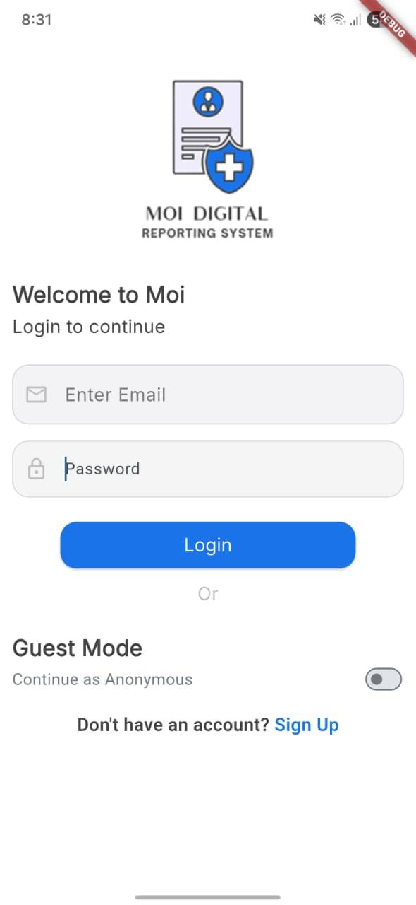

About the project
The system supports digital report submission, review and moderation through separate workflows for the public, officers, and administrators.


A secure, multi-role Flutter system for digital report submission, moderation, and analytics.
The system supports digital report submission, review and moderation through separate workflows for the public, officers, and administrators.
fl_chart.A walkthrough from sign-in and report submission through officer review.
